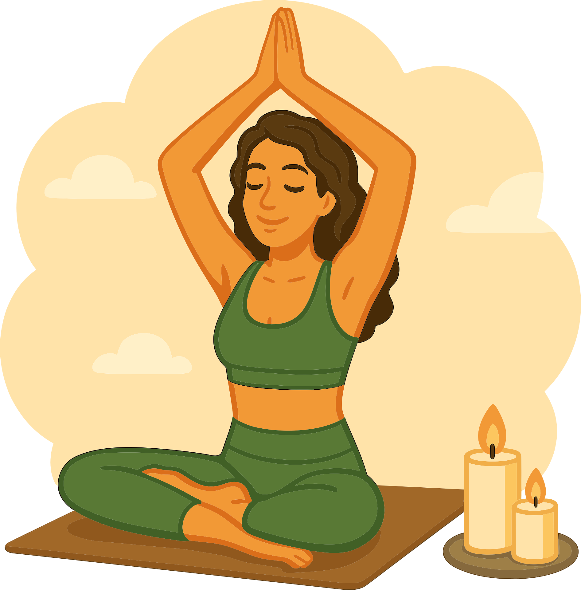
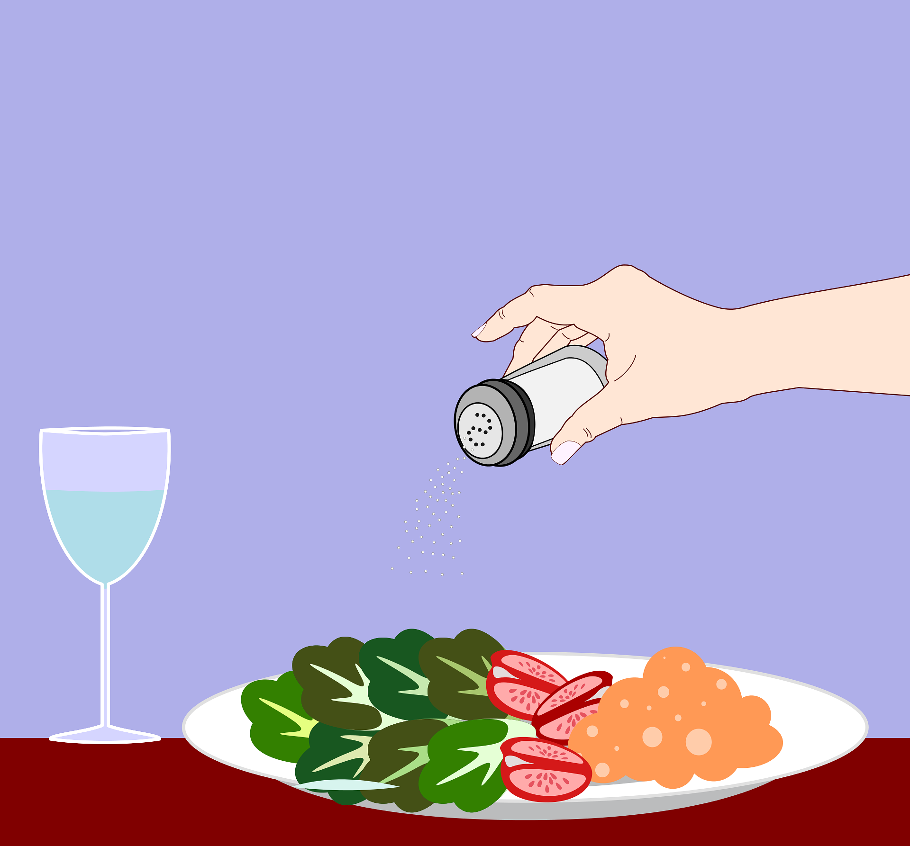
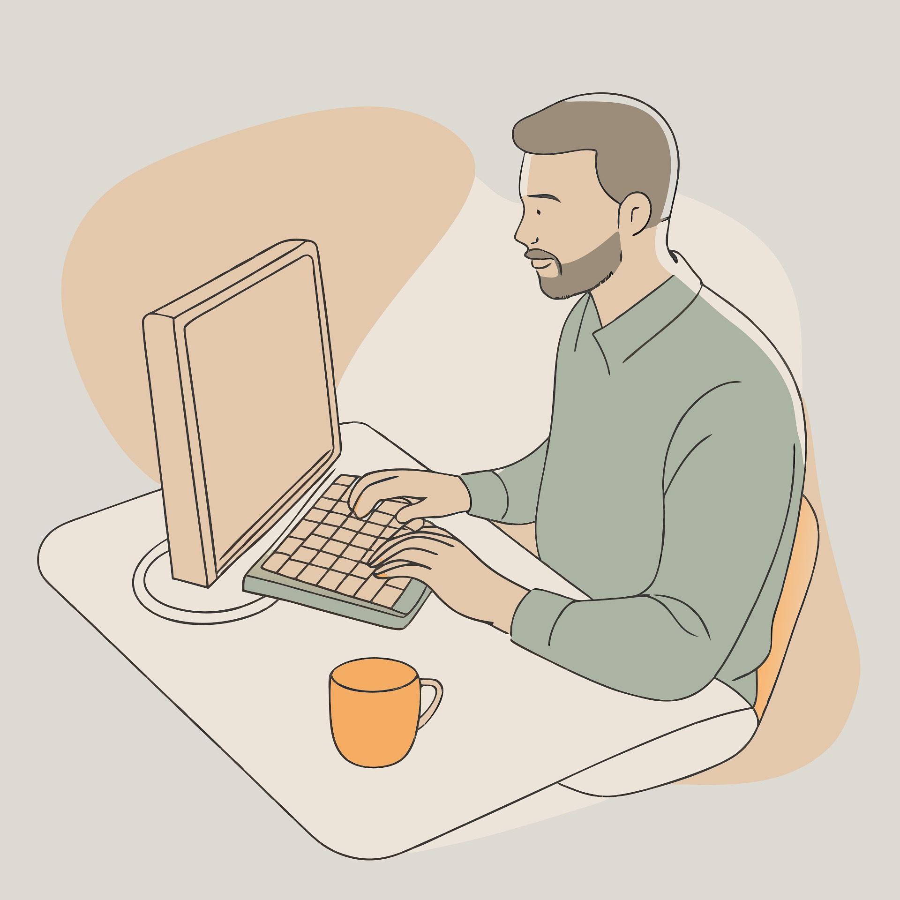

<link rel="stylesheet" href="style.css">

<link rel="icon" href="/images/favicon.ico" type="image/x-icon">

<link rel="stylesheet" href="style.css">

<header class="main-header">
  <div class="logo">
    <a href="index.html" class="logo-link">
      
      <span>ClarityBased</span>
    </a>
  </div>
  <nav class="nav-menu">
    <a href="SelfGrow.html">Self-Growth</a>
    <a href="CareerFinance.html">Career & Finance</a>
    <a href="Relationships.html">Relationships</a>
    <a href="MindTraining.html">Mind Training</a>
    <a href="WellnessPsychology.html">Wellness & Psychology</a>
  </nav>
</header>


<!-- პირველი ბლოკი -->
<section class="hero-card">
  <div class="hero-left">
    
  </div>
  <div class="hero-right">
    <h2>10 Ways to Cope with Stress — Calm Your Mind, Protect Your Energy</h2>
    <ul>
      <li>1. Breathe before you respond<br> One deep breath buys you 5 seconds of peace.
And sometimes, that’s all it takes to not spiral.</li>
      <li>2. Name what’s stressing you<br> Vague stress is louder.
Write it down — even one sentence. It turns the fog into something you can face.</li>
      <li>3. Move your body, even a little<br> Stretch. Walk. Shake it out.
Your body stores tension — don’t let it sit too long.</li>
      <li>4. Protect your inputs<br> What you scroll matters.
Follow people who calm you. Mute what drains you. Your nervous system is listening.</li>
      <li>5. Shorten your to-do list<br> Stress grows when everything feels urgent.
Pick 3 things. Let the rest wait. That’s not laziness — it’s survival.</li>
    </ul>

    <div class="hero-footer">
      <div class="hero-note">
        <p>Stress is real — but so is your capacity to heal.
You don’t need to fix everything today. You just need to breathe, and begin.</p>
      </div>
      <div class="hero-button">
        <a class="cta-button" href="https://claritybased.gumroad.com/l/ljxzgx">Get the Stress Relief Toolkit <span>$4.99</span></a>
      </div>
    </div>
</section>

<div class="challenge-container">
  <div class="hero-left">
    
  </div>
  <div class="hero-right">
    <h2>Light Diet — A Gentle Reset to Reduce Unhealthy Habits</h2>
    <ol>
      <li><strong>Eat like you love yourself — not like you're punishing yourself</strong><br>No more guilt-filled meals.
Ask: “Will this make me feel nourished or numb?” That’s where better choices begin.</li>
      <li><strong>Add before you subtract</strong><br>Instead of cutting everything out, try adding lightness in.
More water. More greens. More real food.
Your body feels the shift without the fight.</li>
      <li><strong>Notice how food makes you feel — not just how it looks</strong><br>That pretty snack might spike your energy… then crash it.
Pay attention to what leaves you calm, light, and steady.</li>
      <li><strong>Don’t aim for perfect — aim for kind</strong><br>No “clean eating” extremes. No all-or-nothing.
This is a soft reset, not a strict plan.</li>
      <li><strong>Let your habits be gentle, not dramatic</strong><br>One healthy choice at a time.
Less pressure, more presence.
Your body already knows what it needs — just start listening again.</li>
    </ol>
    <div class="cta">
      <p>Your body doesn’t need punishment — it needs partnership.
Reset with kindness, not control.</p>
      <a class="cta-button" href="https://claritybased.gumroad.com/l/tjmzrx">Get the Gentle Reset Guide <span>$3.99</span></a>
    </div>
  </div>
</div>


<div class="challenge-container">
  <div class="hero-left">
    
  </div>
  <div class="hero-right">
    <h2>Remote Life — How to Work From Home (and Not Lose Your Mind)</h2>
    <ol>
      <li><strong>Put on real pants (at least sometimes)</strong><br>Yes, it’s tempting to live in pajamas.
But your brain needs little signals like, “we're in work mode now.”
Comfort is fine. Full-on couch blob mode? Not so much.</li>
      <li><strong>Build a “start” and “stop” ritual</strong><br>No commute means no clear boundary.
Light a candle, play a song, close the laptop — give your brain a sense of done.</li>
      <li><strong>Talk to actual humans</strong><br>Zoom calls don’t count.
Message a friend. Say hi to the barista. Don’t let your social life become Slack-only.</li>
      <li><strong>Separate space = separate mindset</strong><br>Even if it’s one corner, make it yours.
Working in bed sounds dreamy… until your brain forgets how to rest.</li>
      <li><strong>Move, stretch, go outside</strong><br>Your body is not a desk accessory.
Even 5 minutes of sun or a quick walk can reset your entire brain chemistry.</li>
    </ol>
    <div class="cta">
      <p>Remote work = freedom and responsibility.
You don’t need to “grind harder” — you just need better rhythms.</p>
      <a class="cta-button" href="https://claritybased.gumroad.com/l/xukstw">Get the Work-from-Home Guide <span>$4.99</span></a>
    </div>
  </div>
</div>


<div class="challenge-container">
  <div class="hero-left">
    
  </div>
  <div class="hero-right">
    <h2>Boosting Self-Confidence — Rebuild Your Inner Power, Step by Step</h2>
    <ol>
      <li><strong>Confidence isn’t loud — it’s quiet self-trust</strong><br>
        You don’t need to be the most outspoken person in the room.
True confidence is when you believe yourself, even when no one else claps.</li>
      <li><strong>Start showing up before you feel ready</strong><br>
        Confidence grows from action — not the other way around.
Do the thing scared. You’ll feel less scared next time.</li>
      <li><strong>Stop collecting proof you’re not enough</strong><br>
        Your brain will find whatever you look for.
Shift the lens: What did I handle today? What am I proud of, even a little?</li>
      <li><strong>Say your thoughts out loud — kindly</strong><br>
       When you hear yourself say “I can’t” or “I’m not good at…” — pause.
Would you say that to someone you love? Talk to yourself like that someone.</li>
      <li><strong>Stack small wins daily</strong><br>
       Confidence isn’t built by big victories — it’s stacked, like bricks.
One kept promise to yourself at a time.</li>
    </ol>
    <div class="cta">
      <p>Your confidence was never lost — just buried under doubt.
Let’s bring it back, gently but surely.</p>
      <a class="cta-button" href="https://claritybased.gumroad.com/l/xcaore">Get the Confidence Rebuild Plan <span>$5.99</span></a>
    </div>
  </div>
</div>


<link rel="stylesheet" href="style.css">

<script src="script.js"></script>


<footer class="custom-footer">
  <div class="footer-left">
    <button class="contact-button" id="contactBtn">
      <i class="fas fa-envelope"></i> Contact Us
    </button>
  </div>

  <div class="footer-right">
    <div class="brand-info">
      
      <div>
        <h2>ClarityBased</h2>
        <p class="slogan">Find clarity. Live intentionally.</p>
      </div>
    </div>
    <p class="footer-copy">© 2025 ClarityBased. All rights reserved.</p>
  </div>
</footer>


<div id="contactModal" class="modal">
  <div class="modal-content">
    <span id="closeModal" class="close">&times;</span>
    <h2>Contact Us</h2>
    <form action="https://formspree.io/f/mldnyaoo" method="POST">
      <input type="text" name="name" placeholder="Your Name" required />
      <input type="email" name="email" placeholder="Your Email" required />
      <textarea name="message" placeholder="Your Message" required></textarea>
      <button type="submit">Send</button>
    </form>
  </div>
</div>
